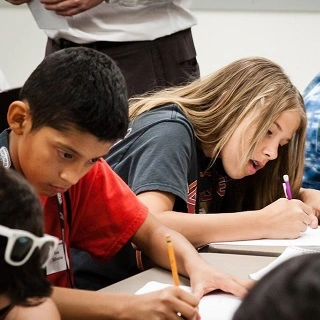

Memorize to Ponder
Memorizing verses might be the start of your own scripture reading.
Benefits
Fun
Memorizing in a game-like structure makes it fun and engaging.
Knowledge
Memorizing exercises your brain maintaining clear mind.
Spiritual
Memorizing verses can enhance your own scripture study and keeps you closer to God.
Activity with
Friends

Family

Students
Organizations
Yourself